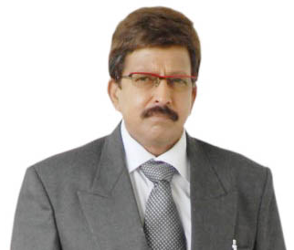

Dr.Rajkumar, the founder of Topper Tutorials, armed with a vision of providing an academic environment that nurtured original thinking and created confident individuals he founded the Topper Tutorials in the year 2001.Being a fun loving person, he makes sure to spend time with his own children at home, listen to music & engage in different kinds of sports.
Prof.Shankarnag has been a faculty at Topper Tutorials since 2003.Outside of his responsibilities in the physics classroom and lab, he hosts sessions of physics to the young, observatory and voluntary students as a hobby.
Dr.Vishnuvardhan, Professor at Topper Tutorials began teaching in 2001. He currently teaches general, analytical, inorganic chemsitry and laboratory glassblowing. He enjoys helping students, to reach their academic potential.

Mr.Prabhakar Assistant Professor of Mathematics at Topper Tutorials began teaching in 2003. He has particularly mastered in the mathematical theory of knots, their applications and their connections with hyperbolic geometry.
Prof.Kashinath, has been at Topper Tutorials since 2005. His teaching interests include plant systematics and genetics. Apart form biology, he advises in the areas of natural science, veterinary medicine, medical radiography and occupational therapy.